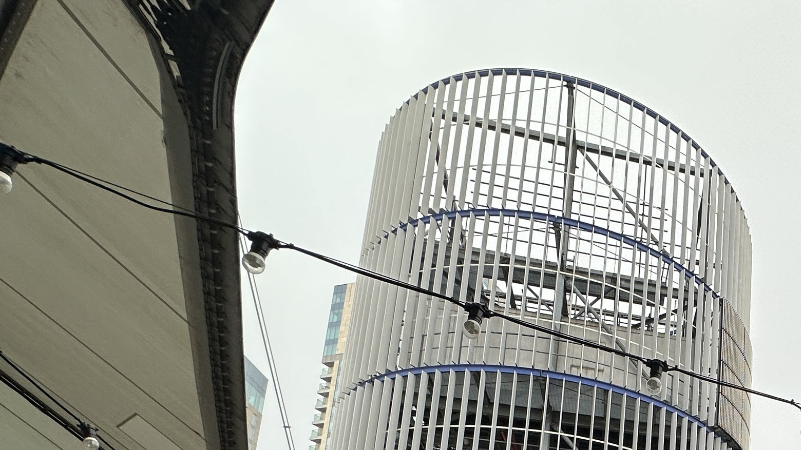
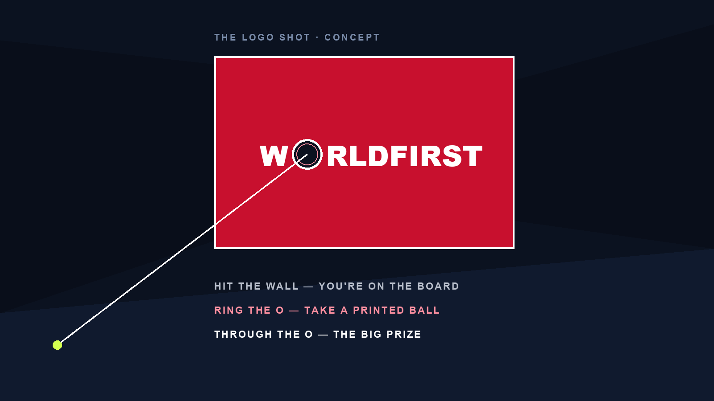
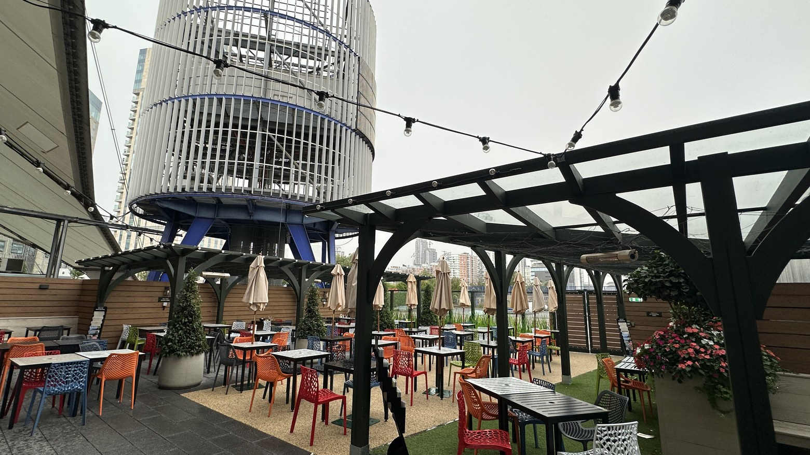

Ant sponsors it. We get a slice. Here's what we'd do with it.
The sponsorship
Ant International is a global sponsor of the Laver Cup, and Carlos Alcaraz is Ant's global ambassador. Alipay+ owns the in-arena branding and the big consumer OOH across London.
Our slice
WorldFirst, as an Ant brand, gets a share: a spot on the shared fan-zone booth, a confirmed per-BU hospitality allocation (gala, breakfast, match sessions), and the Laver Cup logo. No player images on our channels; no Alcaraz activity in the UK outside the tournament.
What we propose
Leverage the Laver Cup for two WorldFirst wins: a brand lift in the UK, our weakest market, and the key accounts we most want to acquire. The play centres on where the crowd already is: a branded game at the O2, a pre-match bar, disciplined hospitality — with OOH costed for a keep-or-park call.
Red flag on Alcaraz
He is Ant's global ambassador, but he comes to play the Laver Cup and leaves. No appearances, no shoot, no UK activity we can build around him. Plan for zero Alcaraz access outside the arena, and treat every player image as Ant's to clear, not ours.
One structural question sits with the sponsorship team first: whether the tennis activation runs WorldFirst-only or Ant-wide, every BU inviting. The rest of this deck is the ideas laid out by date, 14 → 27 September — tell us what to keep.
The shared booth — last year's awning read Alipay+ · Antom · WorldFirst — with a serve-challenge court and a digital tennis game, between North Greenwich station and the arena doors. Nearly two weeks of footfall.
What we do with it
The photo mission: this is the fortnight we gather the great pictures — booth, reds, the O2, our people. The assets the rest of the year reuses.
KOLs invited to play and film; clients drop by; the brand ambassador can appear if in town
The bridge: this booth already carries a serve challenge — our Logo Shot game (tennis section) could live inside this exact footprint: one build, every BU inviting, raised with the sponsorship team
2026 plan · official2025 · San Francisco
WorldFirst × Laver Cup 2026SEP 14
BY SEP 14 · OOH 1/3 · TWO CONCEPTS
OOH
Two concepts, now costed — for a keep-or-park call
OOH at the O2.
Alipay+ · in market, Alcaraz already cleared
Concept A · borrow the approved asset
Alipay+'s banner runs Carlos Alcaraz, and that image is already approved by his team. So the easy leverage is a WorldFirst version of the same asset: our logo, our message, on artwork that is cleared. Borrowed fame, least friction.
Concept render · split board
Concept B · Team Europe v Team World
Split one board down the middle, half blue and half red, with WorldFirst on the world side. No player image, so nothing to clear beyond the Laver Cup lockup we hold. Less borrowed, more brand — a smart play on their own format.
Both are directions, not decisions — and we're open to a third. The Laver Cup is in London, our home turf. If there's a better way to use the streets, bring it.
WorldFirst × Laver Cup 2026BY SEP 14 · OOH 1/3
BY SEP 14 · OOH 2/3 · WHERE IT RUNSSuggestion
14
A suggestion, not a plan · nothing booked
North Greenwich, and the roads in.
Peninsula Square · the banner sites outside the station
Suggested sites, with benchmark bands*
North Greenwich station — everyone arriving comes through it. Digital 6-sheet pack ~£6–9k / 2 wks · escalator takeover £15–18k · full station takeover £30–60k in event week
Buses 188 / 177 / 129 — the routes through the city and into Greenwich (quoted per route)
Canary Wharf — one stop up the Jubilee line, full of the people we actually sell to; same formats, similar bands
The cheap win
Ask Transport for London to write the event on the message boards at North Greenwich — the hand-written ones the @allontheboard account is known for. They do it for big O2 events, and everyone leaving the tube walks straight past them.
*Benchmark bands from published UK OOH rate guides (TfL inventory sold by Global) — not quotes; event-week demand prices the top of each band. Photo: Peninsula Square, North Greenwich (The wub, CC BY-SA 4.0, via Wikimedia).
WorldFirst × Laver Cup 2026BY SEP 14 · OOH 2/3
BY SEP 14 · OOH 3/3 · THE VENUE'S OWN SCREENSSuggestion
O2
The premium option · the O2's own digital estate
The digital drum.
The entrance drum · the LED band wraps this cylinder

What it is
The drum at the O2's entrance and the estate's other digital screens — every arriving fan walks past them. Sold directly by the venue's partnerships team, no public rate card. The red wrap you see on it today is Virgin Media's, and that's naming-rights signage, not bought media.
£25–75kest. per event fortnight
Benchmarked against comparable premium full-motion digital in London. The smart route runs through the sponsorship: Ant already holds the relationship with the venue, so any ask should go via the sponsorship team — bundled or discounted beats rate card.
Benchmark band, not a quote — the venue prices it deal by deal. Photo: the drum from the Stargazer terrace, The O2 (CC BY 4.0, via Wikimedia).
WorldFirst × Laver Cup 2026BY SEP 14 · OOH 3/3
TOURNAMENT WEEK · VENUE PENDINGOptional
KA
Match week, at the O2 — where the crowd already is
The tennis event, at the Cup.
One court-side game build at the O2 on match days: a hired British tennis great, short winnable games, and a crowd that's already there. KA clients and partners are hosted through it; spectators play too. Brand activation first — the room is the bonus.
The gating question
Court or space at the O2 estate on match days. Two channels in parallel: the organisers via the sponsorship team, and an agency quote for a temporary build near the entrance.
Kept open
If the venue fails, the fallback is a private-club version the week before — run as our own event, no Laver tie needed.
WorldFirst × Laver Cup 2026THE TENNIS EVENT · OPTIONAL
KA EVENT · WHO'S IN THE ROOM
KA
Twenty of the right people, by invitation
Who's in the room.
01
A UK tennis legend
We hire one to host and play — the reason the room says yes.
02
KA clients
Top accounts, invited personally by their owner.
03
Key partners
The partners we most want in the tent, hosted alongside clients.
04
Ambassador & KOLs
Our brand ambassador can headline; a few KOL seats carry the reach.
05
The crowd — if they're users
Spectators play too. The gate is the perk: you're a WorldFirst user, you play — the Amex playbook.
~20 hosted seats stay by invitation, inside the hospitality rules. The game itself is open to the crowd; sign-ups on the spot count as activation. A small team in red runs the day.
WorldFirst × Laver Cup 2026KA EVENT
KA EVENT · THE GAMES
G
Why a game at all · then the two formats
Hit the logo. Win the point.
We hire a British tennis legend and turn them into a game — fun on the spot, real engagement, content we own. A certified umpire calls it, for the show of it.
The Logo Shot — everyone plays
An enclosed hitting alley, a giant WorldFirst wall at the end. Hit the wall, you're on the board. Ring the O, take home a printed ball. Through the O, the day's big prize. A kids' wall and an adults' wall; every go filmed and sent by QR.
One point v the legend — the show
You — or you and a teammate — against the pro, our logo on the net. One point, ~90 seconds, winnable enough that everyone tries. With a big-serve legend it becomes Return the Rocket: survive one serve, the crowd roars.
Concept render · the Logo Shot wall

WorldFirst × Laver Cup 2026KA EVENT
KA EVENT · THE GUEST PRO
PRO
Fee estimates only — and a certified umpire on the mic turns the games into a show
Who hosts it with us.
Option
Profile (examples of the tier)
Est. fee for one day
Notes
British legend ✦
Tim Henman — retired, universally known in the UK · WIKI ↗
£15–30k
Recommended. Best recognition per pound.
Big-serve legend ✦
Greg Rusedski — once the fastest serve in the world · WIKI ↗
£10–20k
Also recommended. Makes Return the Rocket the headline.
Rather than go straight to agents, the UK team can open a club route: Edgbaston Priory, which has standing contact across British tennis and can make the introductions.
WorldFirst × Laver Cup 2026KA EVENT
KA EVENT · THE TAKE-HOME
TH
Shot in one session, useful for a year
Everyone leaves with something. So do we.
For each guest
A day they remember — their own clip in minutes, signed gifts, and a giant signed World Card for the best point.
For KA
A warm, personal reason to follow up inside 72 hours, with every seat mapped to an account plan.
For the brand
One film plus cuts, and cleared footage of a British tennis great with our product — reusable for a year.
WorldFirst × Laver Cup 2026KA EVENT
KA EVENT · THE COST
£
Estimates only — two venue scenarios, quotes will sharpen both
What the event costs.
Cost line
At the O2 (target) ✦
Private club (fallback)
The pro (day + 12-month organic use)
£15–30k
£15–30k
Venue / space
TBC — the gating item
£3–6k
Game build (alley, logo wall, dressing)
£8–15k
£5–10k
Production (one crew, edit, QR clips)
£10–16k
£10–16k
Gifts & printed balls
£3–6k
£3–5k
Hospitality
£3–6k
£3–6k
Total
~£40–75k + venue
~£35–60k
Estimates, not quotes. If it runs Ant-wide, the build is shared and WorldFirst carries the game and gifts. Budget home: UK hospitality / field events. Nothing is committed here, and the sponsorship team sees the concept before any brief goes out.
WorldFirst × Laver Cup 2026KA EVENT
TOURNAMENT WEEK · THE LAVER WEEK
22
Tournament week, 22–27 September · who holds what, then what "Rocky Club" means
The Laver Week.
What Ant holds that week
All in-arena branding — boards, walls, screens — seen in 234 broadcast markets
The big consumer OOH across London, and Alcaraz
The larger share of VIP hospitality, and all official photography
What WorldFirst holds that week
A place on the shared fan-zone booth, and the Laver Cup logo
A confirmed per-BU allocation: 3 gala · 6 breakfast · 6 per match session (each incl. the BU GM)
Our own channels, our own people, our own banners — and whatever red we choose to add on the street
What "Rocky Club" means. It's the top hospitality tier — all five sessions plus the VIP experiences (back-of-house tour, player photos, courtside practice). Following the sponsorship review, WorldFirst's allocation is confirmed per business unit (see the numbers page). What's still open: which ticket tier carries those VIP experiences.
No player images on our channels; no WF photographer inside; official shots arrive via a shared folder each day. Our budget works the streets, the fan zone and our own channels — not the arena.
WorldFirst × Laver Cup 2026WK OF 22
WED 24 · OPENING GALA
24
The night before play starts · black tie
One night with both teams.
2025 · opening night
3per BU · incl. GM
Confirmed: 3 seats per BU, including the BU GM — so about two client seats. Both teams on stage, the sponsor family in the room. A relationship moment, not a client-acquisition one; leadership decides the two.
WorldFirst × Laver Cup 2026WED 24
MATCH DAYS · THE PRE-MATCH BAR
BAR
One bar, one day, before a session — nothing to build
The pre-match bar.
The O2's terrace bars · reservable, at the door

The idea
Most of our ticket guests hold seats, not VIP hospitality. So we host the warm-up: one reserved bar on the O2 street before one session — drinks, an hour together, then everyone walks in. The UK team picks the spot and the day; Session 1 works as the launch moment.
The gifting moment
The bar doubles as the handover: WorldFirst tennis kit — printed balls, sunscreen, a tote, a visor. Our own merch, no Laver Cup logo, so nothing to license (compliance check to run).
Venue options on the estate run from casual terraces to reservable bars; the cost is drinks plus a reservation. Photo: The O2 (CC BY 4.0, via Wikimedia).
WorldFirst × Laver Cup 2026MATCH DAYS · PRE-MATCH BAR
FRI 25 · SESSIONS 1–2
25
First day of play · WF now holds 6 hospitality tickets per session (confirmed)
Play begins. The tours begin.
2025 · back-of-house tour
Friday morning · Rocky Club only
Back-of-house tour before Session 1 — court floor and players' areas. Attaches to the top rights-ticket tier; whether our 6 hospitality tickets carry it is the one open question with the sponsorship team.
2025 · player photo
10per session · Rocky Club
Photos with players ~30 min before each session, 10 people per session drawn from rights-ticket holders. Which players appear is a blind draw — Alcaraz possible, never promised.
WorldFirst × Laver Cup 2026FRI 25
SAT 26 · THE BIG DAY
26
The highest-value room of the week
Breakfast with Federer. Sessions 3–4.
2025 · Federer breakfast
6per BU · incl. GM
Confirmed: 6 seats per BU, including the BU GM — about five C-level client seats. Prioritise clients holding Saturday-afternoon (Session 3) tickets, already in London that morning. Federer talks, then group and one-on-one photos, plus VIP gifting. LinkedIn post if filming is allowed (TBC).
WorldFirst × Laver Cup 2026SAT 26
SUN 27 · THE FINAL
27
Last morning, last session
Courtside practice, then the final.
2025 · courtside practice
9 / 40came last year
Courtside practice viewing before Session 5, Rocky Club only. Last year 40 were invited and 9 came — mornings are hard; plan guests accordingly. Then the final, and the close of the week.
WorldFirst × Laver Cup 2026SUN 27
REFERENCE · HOSPITALITY NUMBERS
Nº
Allocations confirmed following the sponsorship review · per business unit
Confirmed allocations. Choose carefully.
Benefit
Numbers
Rules & notes
Federer breakfast (Sat 26)
6 per BU, incl. GM
Confirmed. C-level clients, no KOLs — ~5 client seats. Currently all-Enterprise: rebalance one seat to Business, held for UK country leadership. Prioritise Session-3 holders.
Match hospitality (25–27)
6 per BU, per session, incl. GM
Confirmed. Which tier carries the VIP experiences (tour, player photos, courtside practice, shuttle, hotels) is TBC with the sponsorship team.
Opening gala (Wed 24)
3 per BU, incl. GM
Confirmed — ~2 client seats. Leadership decides.
Purchased tickets
Separate from the allocation
Confirmed separate. For KOLs and extra guests; no special experiences attached. Start collecting demand per BU now.
Guest lists — action
Lock in now
Gala is over quota (5 names, 3 seats) — trim. Confirm every name with the UK country team, run compliance (ABAC) checks, then invite.
Signed items
Small quantity — to request
Alcaraz-signed gifts for top customers during the tournament; needs the formal ask.
Employee 50% tickets
TBC — payment link not built
Internal perk only — never offered to clients.
Transport & hotels
Rights-ticket guests only
Mercedes shuttle between official hotels and the O2; 2026 London hotel list TBC.
WorldFirst × Laver Cup 2026THE NUMBERS
OUR GOALS
G
What we're actually chasing — in order
Four goals.
Brand lift in the UK
UK
awareness & search, our weakest market
Share of voice around tennis week vs the September baseline
A visible red presence where the UK is watching
Long-term credibility assets
1 yr+
owned OOH, footage & photos
The red OOH, the event film, the booth and O2 photo library
Cleared, ours, reused on web, decks and social all year
New revenue
90-day
co-owned KA attribution window
Every hosted guest → named owner → 72-hour follow-up → pipeline
New-customer revenue as the number; NFM secondary
Relationships
T1
confirmed hosting capacity
3 gala · 6 breakfast · 6 per match session, plus the optional KA event
Every seat mapped to an account plan before invites go out
Hospitality allocations are confirmed; the creative ideas are for feedback. Draft targets agreed with commercial; the sponsorship team sees everything before any brief goes out. Guest lists to lock in quickly.